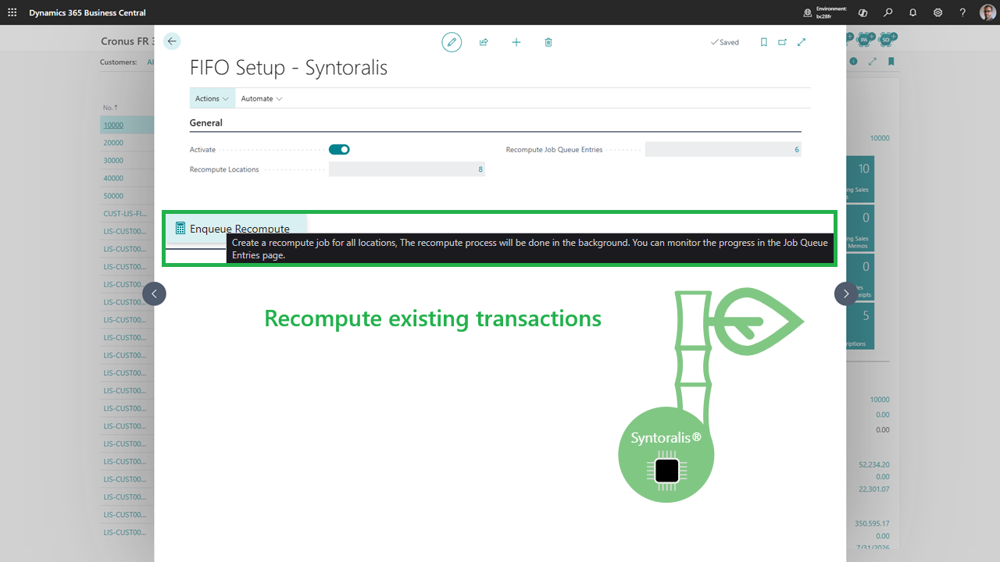
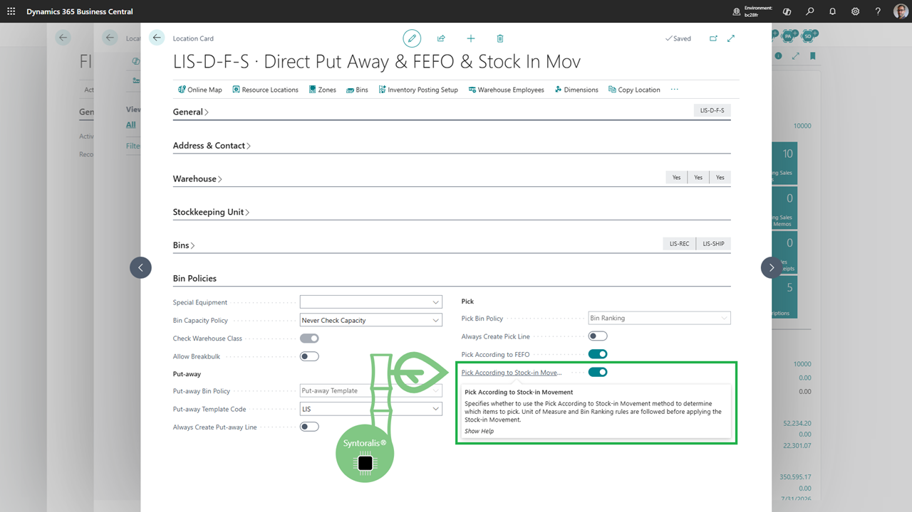
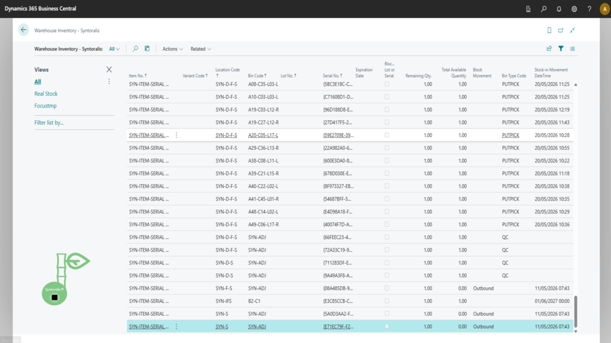

Syntoralis
Syntoralis FIFO Logistic
| Product | Syntoralis FIFO Logistic |
| Publisher | Syntoralis EURL |
| Version | 1.0.0.57 |
| Platform | Microsoft Dynamics 365 Business Central 27.0+ (Cloud) |
| Datasheet date | 29/10/2026 |
| License | Proprietary |
| Documentation | Online documentation |
| Marketplace | Product page on Microsoft Marketplace |
Promise: Pick the oldest stock, automatically, across all your warehouse processes. Reduce stock ageing, eliminate allocation errors and stay compliant in all circumstances - without changing your Business Central processes.
Table of contents
General overview
Syntoralis FIFO Logistic is a Microsoft Dynamics 365 Business Central extension that guarantees real physical FIFO rotation: your picks consume the oldest available stock, based on the real date and time of stock entry (last stock entry movement), regardless of the stock’s position in the warehouse.
Whereas standard Business Central FIFO is primarily an accounting valuation method, Syntoralis FIFO Logistic acts at the physical execution level: your operators always prepare the right stock, at the right time.
In short: the right stock, at the right time - for every pick.
What does physical FIFO solve?
In many Business Central warehouses, FIFO is managed by accounting… but not by physical preparation:
The most recent stock is often picked first (proximity, ease of access).
Older stock stays at the back of bins, ages and becomes obsolete.
Losses and write-downs increase without visibility.
Audits and traceability are hard to justify.
Lot- and serial-tracked items complicate rotation.
Result: waste, hidden costs, compliance risks and margin loss.
The solution: automated physical FIFO
Syntoralis FIFO Logistic takes control of stock selection when picks are created:
Automatically selects the oldest stock based on the last stock entry movement.
Works on all stock outbound processes (warehouse picks, inventory, manual movements, replenishment).
Handles lot-tracked, serial-tracked items and expiry dates (FEFO).
Automatically splits lines across multiple FIFO layers when needed.
Provides full visibility through the Warehouse Inventory page.
Integrates without changing your standard Business Central processes.
Key benefits
| Benefit | What you gain |
|---|---|
| Accuracy | Always the right stock picked - zero allocation errors |
| No waste | Oldest stock leaves first - less obsolescence |
| Audit-ready | Full visibility of FIFO layers, entry dates, remaining quantities |
| Speed | Faster picks, fewer manual searches |
| Fast ROI | Reduced losses and storage costs |
Lot / serial / FEFO compatibility and non-intrusiveness: see §3 and §6.
Who is it for?
Discrete, process and project manufacturers with warehouse management.
Multi-bin warehouses seeking strict FIFO rotation even without full traceability.
Companies with perishable or limited-shelf-life items.
Organizations subject to audits (traceability, FIFO, FEFO).
Logistics teams seeking to reduce waste and errors.
Key features
| Feature | Customer benefit |
|---|---|
| FIFO picking engine | Automatic selection of the oldest stock across all your processes |
| Lot-tracked items | FIFO rotation of lots based on their stock entry (see §3) |
| Serial-tracked items | FIFO selection of serial numbers (see §3) |
| FEFO compatibility | Unified FIFO/FEFO management for perishable items (see §3) |
| Automatic splitting | Smart distribution across multiple FIFO layers (see §3) |
| Warehouse Inventory page | Operational visibility of FIFO layers and consumption order (see §3) |
| FIFO recalculation | Initialization on existing environments, in the background (see §8) |
| Centralized setup | Global activation then per location, safely (see §8) |
| Multilingual | 14 languages available (see §10) |
Typical use case
Receiving: stock enters the warehouse, the entry date/time (last stock entry movement) is recorded.
Storage: stock is put away into bins according to your organization.
Picking: when a pick is created, the system automatically selects the oldest stock.
Preparation: the operator prepares the selected stock - zero errors, zero waste.
Audit: verify the FIFO sequence at any time (see §6, Warehouse Inventory page).
Quick deployment without disrupting your business
FIFO recalculation - initializes FIFO layers from your warehouse history.
Activation - enable globally then per location.
Operation - your picks automatically consume the oldest stock.
Screenshots

FIFO setup

Location card

Warehouse Inventory page
Warehouse pick example
Compatibility & prerequisites
Microsoft Dynamics 365 Business Central version 27.0 or later (Cloud or On-Premises).
Standard warehouse management enabled (bins, warehouse activities).
FIFO bins do not use default, fixed or dedicated bins.
Bin selection policy by: Bin Ranking.
14 languages supported: Czech, Danish, German, English, Spanish, Finnish, French, Icelandic, Italian, Norwegian Bokmål, Dutch, Portuguese, Russian, Swedish.
Pricing & trial
Free trial available - test on your environment.
Pricing based on number of users / subscription (see Marketplace listing).
Support included via documentation and publisher.
Ready to reduce waste and guarantee perfect FIFO rotation?
Buy on Microsoft Marketplace · Read the documentation · Download
FAQ
Q: Isn’t standard Business Central FIFO enough?
A: Not for physical rotation - standard FIFO is an accounting valuation method; Syntoralis FIFO Logistic guarantees physical stock rotation, regardless of bin (see §1).
Q: Do I need to change my existing processes?
A: No. The extension integrates with standard Business Central warehouse management processes (see §3).
Q: Can FIFO be enabled on some locations only?
A: Yes. Activation is done globally then per location, in a controlled way (see §8).
Q: What happens with lot- and serial-tracked items?
A: They are handled according to FIFO rules based on the last stock entry movement (see §3 and §6).
Q: Is it compatible with FEFO?
A: Yes, a dedicated compatibility logic avoids FIFO/FEFO conflicts (see §3 and §6).
Q: How do I initialize on an environment already in use?
A: Via the FIFO recalculation function, which rebuilds FIFO layers from warehouse history (potentially long processing depending on existing data volume) (see §8).
Security & compliance
Privacy : https://syntoralis.eu/index-en.html#mentions-legales
EULA (B2B) : https://syntoralis.eu/index-en.html#cgv-b2b
Documentation compliant with accessibility best practices (RGAA AAA).
Telemetry: Application Insights (West Europe).
Source code not distributed © Syntoralis EURL. Any reproduction, distribution or commercial use without prior written authorization is prohibited.